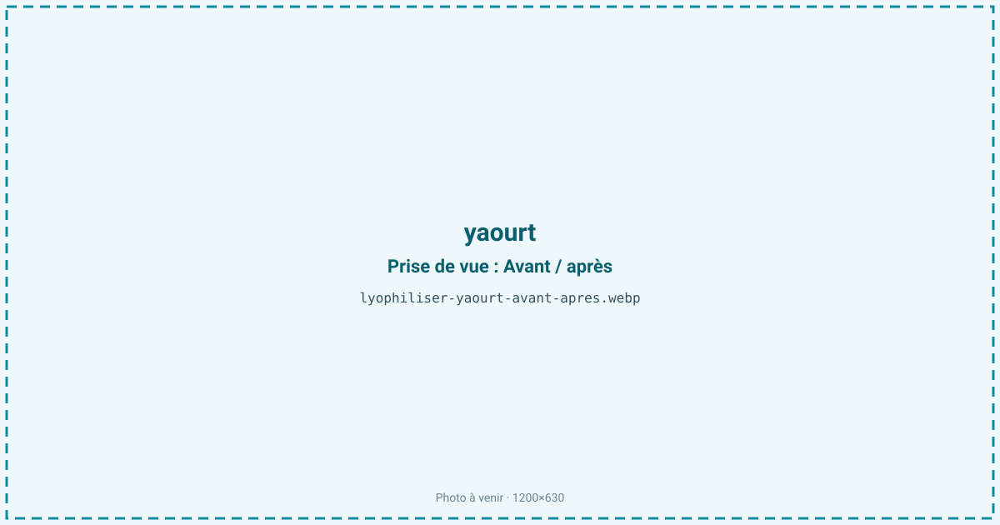
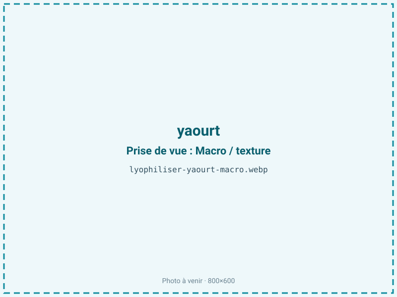
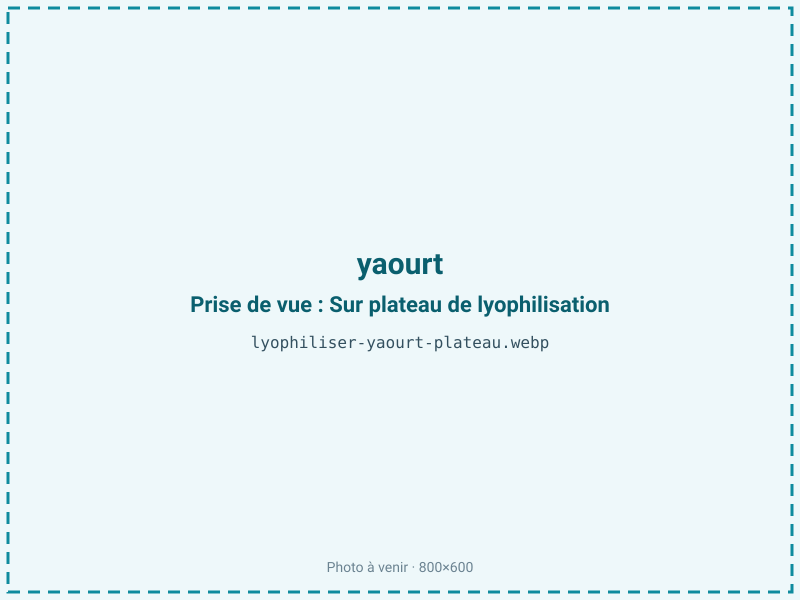
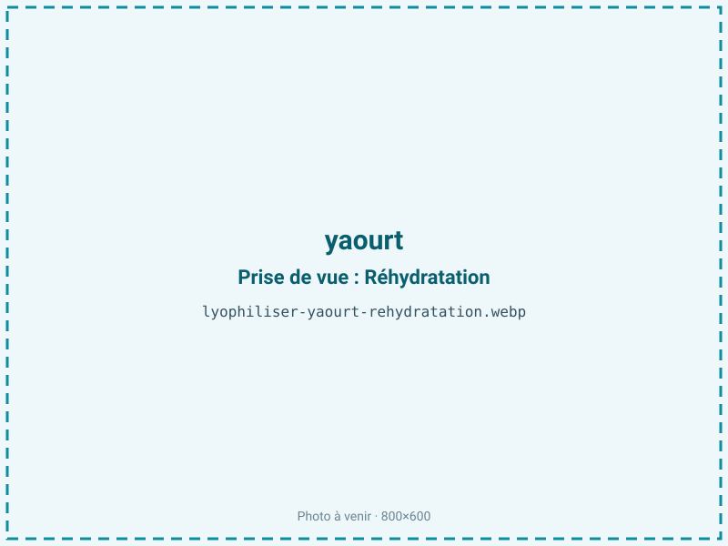

Lyophiliser du yaourt
Le yaourt ne se garde que quelques semaines au frais et voyage mal. La lyophilisation en fait des bouchées fondantes et acidulées ou une poudre stable à température ambiante, qui gardent le goût lactique et une partie des ferments. C'est un en-cas sain, une base de smoothie et un ingrédient de snacking pour enfants.

En bref
Comment yaourt se comporte à la lyophilisation
Le yaourt est un gel de caséines coagulées par acidification lactique, contenant 80 à 87 % d'eau, environ 4 à 5 % de lactose, des protéines laitières et une matière grasse variable (0 à 4 % selon qu'il est maigre ou au lait entier). Il héberge des ferments vivants, Streptococcus thermophilus et Lactobacillus bulgaricus, à une acidité de pH 4,2 à 4,6.
À la congélation, l'eau du gel cristallise et une partie des bactéries meurt sous l'effet des cristaux, sauf ajout de cryoprotecteur ; à la sublimation, le gel se vide de son eau et devient une mousse poreuse et cassante qui fond en bouche. Le point sensible est le couple lactose-protéines : si la température de clayette monte, la réaction de Maillard démarre et le produit brunit en prenant un goût de lait cuit. Le lactose, sucre à transition vitreuse basse, expose aussi le produit au collapse si la rampe de séchage est trop rapide.
Paramètres de cycle
Étaler le yaourt en couche de 5 à 10 mm, ou le déposer en petites gouttes pour obtenir des bouchées régulières. Congeler à −30 à −35 °C pour figer le gel sans le déstructurer et préserver au mieux les ferments. En sublimation primaire, garder une clayette modérée et une rampe lente : le lactose collapse facilement et un séchage brutal tasse la mousse au lieu de la laisser aérée. Enchaîner un palier secondaire pour descendre l'activité de l'eau.
La cible retenue est aw 0,20 à 0,30. Un yaourt maigre, quasi sans matière grasse, se stabilise bien à ce niveau bas ; pour un yaourt au lait entier, plus gras, on reste plutôt vers le haut de cette plage afin de ne pas fragiliser la fraction lipidique. Le critère d'arrêt combine une activité de l'eau contrôlée et une bouchée qui craque sèche, sans zone collante.
Pièges connus
- Sucre + protéines : surveiller le brunissement.
- Conditionner à l'abri de l'humidité.



Variantes & provenance
Un yaourt brassé, plus lisse, s'étale mieux qu'un yaourt ferme qu'on peut découper. Le yaourt grec, égoutté et plus concentré (moins d'eau, plus de matière grasse), sèche plus vite mais demande de surveiller l'oxydation. Un yaourt maigre à 0 % supporte une aw plus basse qu'un yaourt au lait entier. Les versions sucrées ou aux fruits ajoutent du sucre : le risque de collapse et de brunissement augmente, et la teneur en eau des fruits allonge le cycle. Un yaourt aromatisé garde bien ses notes, tandis qu'un yaourt nature donne la poudre la plus polyvalente. Le taux de ferments de départ influe directement sur la viabilité après séchage.
Conservation & DLUO
Deux facteurs limitent la conservation. Pour un yaourt au lait entier, la matière grasse laitière dicte l'optimum : la stabilité oxydative se situe entre aw 0,30 et 0,50, et descendre sous 0,30 retire la monocouche d'eau qui protège les lipides, ce qui accélère le rancissement ; on garde donc un yaourt gras vers le haut de sa plage. Pour un yaourt maigre, quasi sans lipides, une activité de l'eau plus basse reste favorable et allonge la conservation. Le second facteur, commun aux deux, est la reprise d'humidité : le lactose est hygroscopique et la mousse se ré-humidifie vite à l'air, ce qui déclenche à terme le brunissement de Maillard. Comptez 10 à 18 mois en sachet barrière, opaque et refermé rapidement, de préférence stocké au frais et à l'abri de la lumière.
10 à 18 mois en sachet barrière.
Estimez selon votre emballage :
Face aux autres procédés de séchage
Le yaourt ne peut pas être séché à l'air chaud : la chaleur cuit les protéines, tue les ferments et déclenche un brunissement massif entre lactose et caséines, donnant un goût de lait cuit. L'atomisation, utilisée pour les poudres de lait industrielles, monte trop en température pour préserver une part significative de ferments vivants. Le micro-ondes sous vide reste plus doux mais peine à garder la mousse aérée et fondante recherchée pour les bouchées. La lyophilisation est la seule voie qui préserve à la fois la texture fondante, le goût acidulé et une fraction des probiotiques, ce qui en fait le procédé de référence pour le snacking laitier.
Marchés & applications
Bouchées de yaourt en snack pour enfants et en-cas sain, poudre de yaourt pour smoothies, mueslis et barres, inclusions acidulées en chocolaterie et confiserie, base aromatique lactique pour l'industrie. Les clients types sont les marques de snacking infantile et de petit-déjeuner, les fabricants de barres et céréales, les chocolatiers cherchant une note acidulée, et les industriels de la nutrition. Les bouchées enrobées de fruits lyophilisés comme la fraise ou la framboise sont un produit fini courant en grande distribution.
- Bouchées de yaourt
- Poudre pour smoothies
- Snack enfant
Questions fréquentes — yaourt
Les ferments survivent-ils à la lyophilisation ?
En partie : une fraction des Lactobacillus et Streptococcus reste viable, surtout avec cryoprotecteur, mais le yaourt lyophilisé n'est pas un probiotique garanti sans dosage.
Peut-on refaire du yaourt avec la poudre ?
Non de façon fiable : la viabilité résiduelle est insuffisante et variable. On utilise un ferment dédié pour ensemencer un nouveau yaourt.
Le yaourt lyophilisé est-il acide ?
Oui, le goût lactique acidulé est concentré par le départ de l'eau, à un pH voisin de 4,5.
Faut-il du yaourt sucré ou nature ?
Le nature donne la poudre la plus polyvalente ; le sucré est plus gourmand mais collapse et brunit plus facilement.
Quel est le ratio ?
Environ 6:1 : il faut à peu près 600 g de yaourt pour 100 g de produit sec.
Les bouchées fondent-elles en bouche ?
Oui : la mousse poreuse se dissout au contact de la salive, d'où la sensation fondante caractéristique.
Grec ou classique ?
Le yaourt grec, plus concentré, donne un rendement supérieur, mais sa matière grasse plus élevée demande de surveiller l'oxydation.
Prochaine étape : envoyez-nous 200 g
Vous avez les repères du yaourt. La suite logique : nous envoyer un échantillon et repartir avec une fiche technique sur votre produit — rendement, aw finale, coût au kilo.
Tester du yaourt — 250 à 500 €Déductible de votre premier lot.